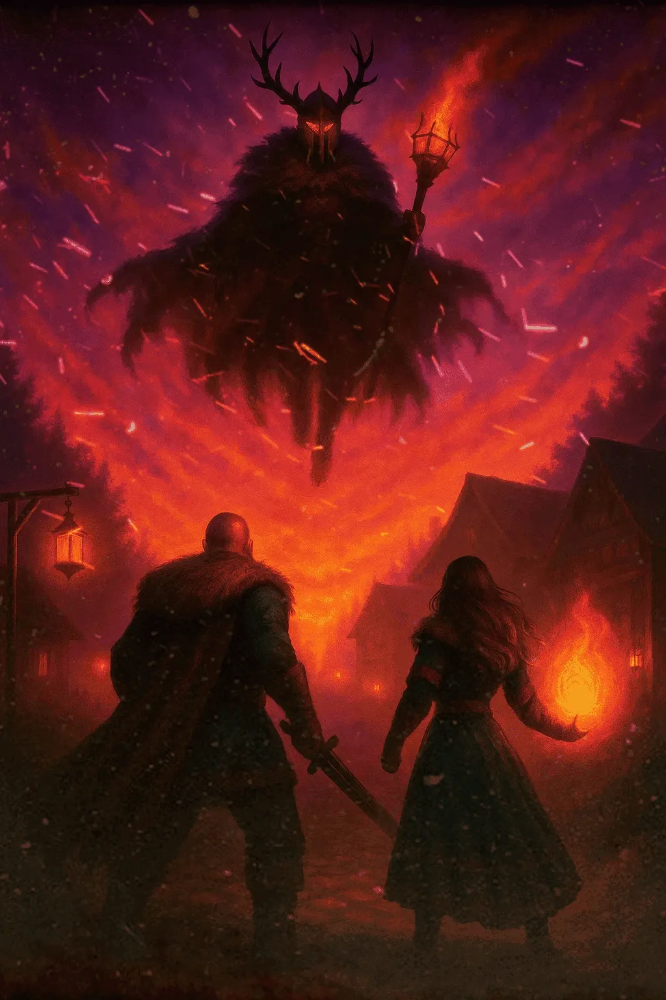

En un rincón olvidado del mundo, Midgard, donde todos buscan encontrar su luz. Runa y Einar viven una vida tranquila, lejos del caos
SINOPSIS

Pero todo cambia cuando Hel, la Reina del Inframundo, secuestra a Runa para desatar un poder oculto que podría destruirlo todo
Impulsado por la furia, Einar emprende una travesía a través de tierras malditas, enfrentando enemigos ancestrales y desafiando sus propios límites. Todo por una promesa: recuperar a su hermana
Pero al llegar al corazón del inframundo, descubre la verdad más dura: Runa ya no es la misma. Y para salvarla… deberá estar dispuesto a luchar contra ella.